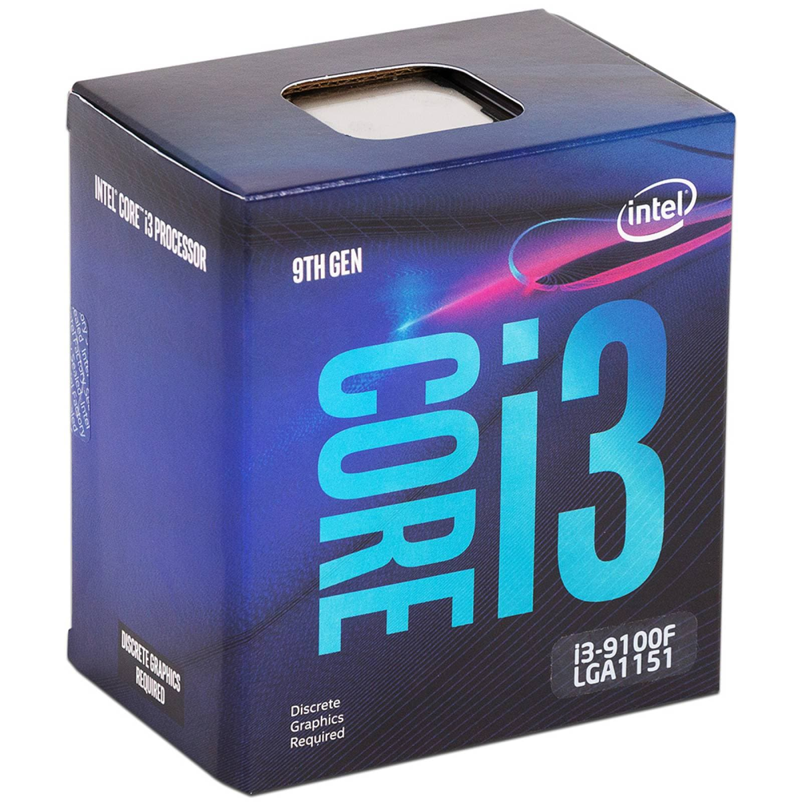
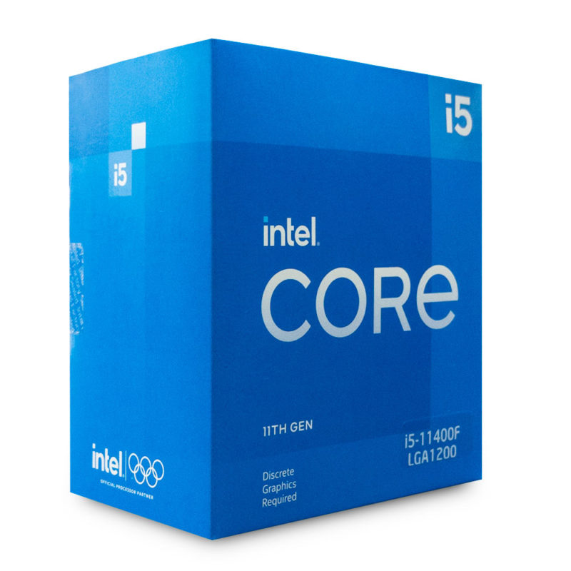
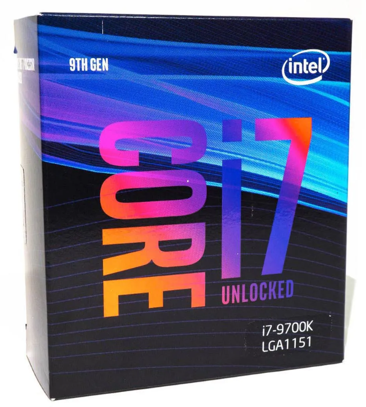
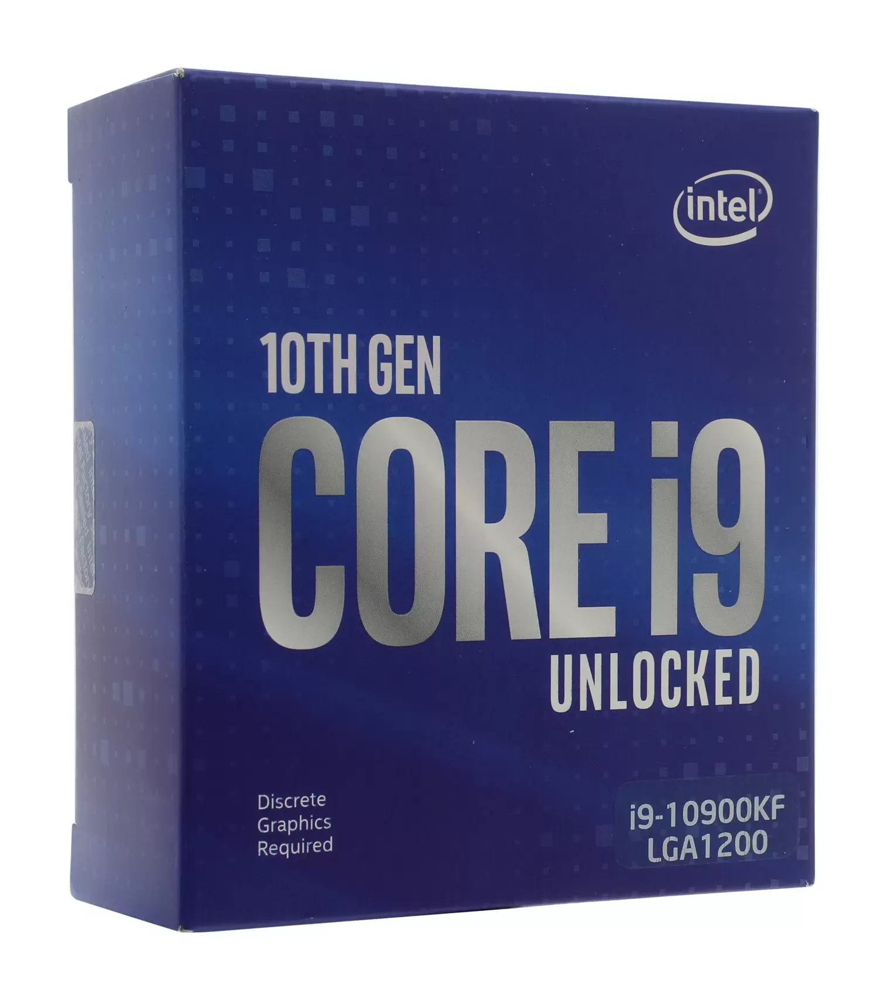
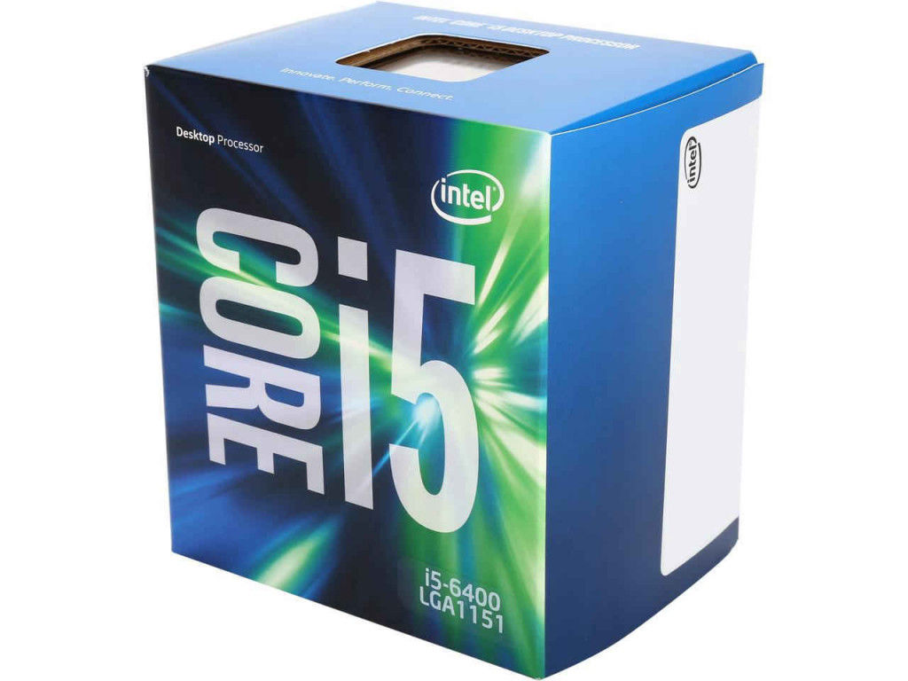

Нажмите на изображение, если хотите узнать о модели поподробнее.





Процессор, считающийся одним из наиболее востребованных и бюджетных на отечественном рынке. Он относится к разряду игровых. Его стоимость невысока по сравнению с моделями с похожими характеристиками.
Камень десятого поколения работает на основе шести ядер с частотой 2.9 ГГц и возможностью увеличить показатель до 4.3 ГГц. Если первый параметр сам по себе неплох, то благодаря второму пользователь сможет без каких-либо проблем запускать современные игры и не испытывать дискомфорта в плане производительности. Также нам подвезли кэш 3-го уровня в размере 12 Мб и возможность ставить планки ОЗУ с рабочей частотой 2666 МГц максимум.
Дискретной графики тут нет совершенно, на что периодически гневно обращают внимание владельцы, однако на фоне низкой стоимости это не такая большая проблема.
Мощнейший серверный процессор Intel: очень производительный, горячий и дорогой. Создан по 14 нм техпроцессу на архитектуре Cascade Lake-SP и совместим с сокетом LGA3647. 16 ядер работают в 32 потока на тактовой частоте 3400 МГц в обычном состоянии и 4100 МГц с Turbo Boost. Поддерживает до 1024 ГБ памяти типа DDR4 с частотой до 2933 МГц на шести каналах. Типичное тепловыделение в 205 Вт требует очень серьёзного охлаждения.
Отдать за этого красавца придётся без малого 300 000 рублей. Слово Gold в названии здесь явно неспроста. Зато на его основе будет просто летать даже самый загруженный серверный компьютер.
Core i9-12900K — является флагманским процессором семейства Alder Lake, с которым пользователь получает самый максимум производительности «из коробки». Особенностями этого CPU являются наличие всех доступных 8Р и 8Е ядер, L3-кэш объемом 30 Мб, высокие тактовые частоты, а также возможность ручного разгона за счет разблокированного множителя. Обратной стороной Core i9-12900K являются цена в $589, солидное энергопотребление и высокие требования к системе охлаждения. Особенно явно это проявляется в ресурсоемких задачах, в которых аппетиты этого CPU могут выйти за границы в 240 Вт.
Учитывая тот факт, что в зависимости от вычислительной нагрузки Р-ядра этого CPU работают на частотах от 4.9 до 5.2 ГГц, процессор Core i9-12900K не сильно нуждается в разгоне. Только если очень хочется, и при наличии технической возможности отвода более 300 Вт тепла. Наш экземпляр данного CPU удалось разогнать до 5.1 ГГц по Р-ядрам и до 4.1 ГГц по Е-ядрам. При этом энергопотребление разогнанного Core i9-12900K в самых тяжелых сценариях составило 324 Вт.